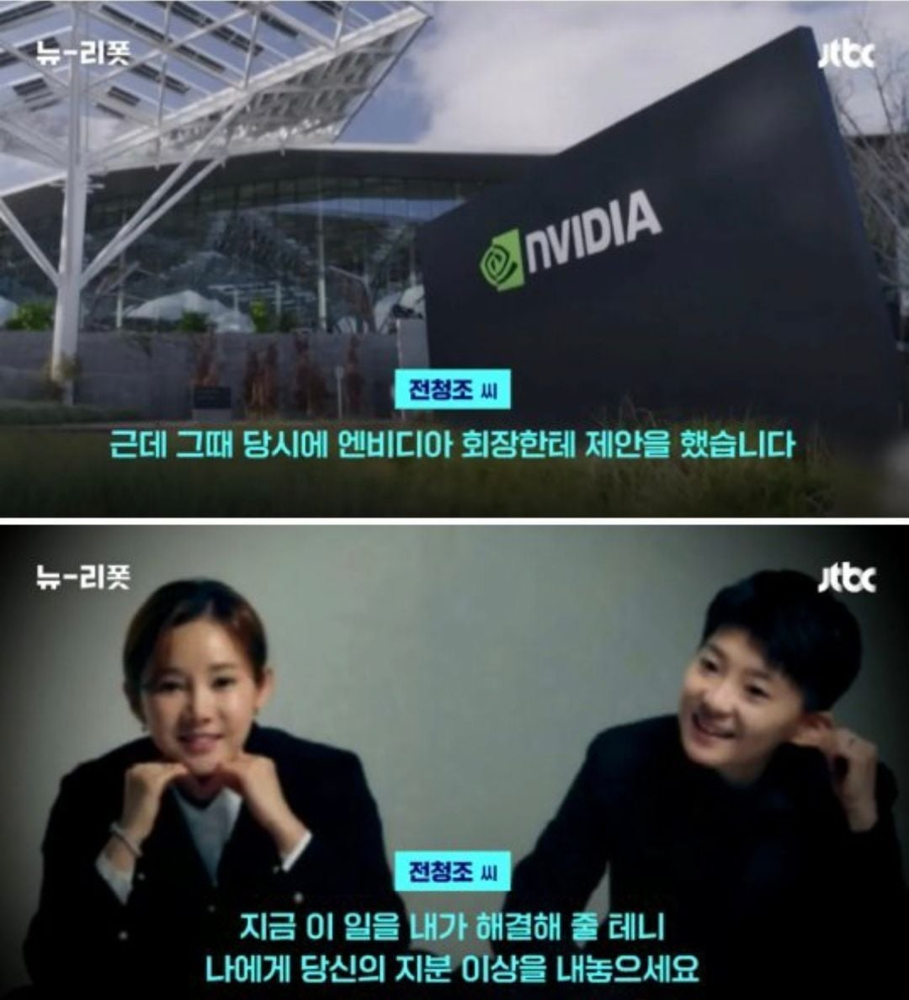
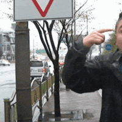

대 청 조

대 청 조
웅 정답 알려 줬잖아.
저때라도 엔비디아 살껄!
하필 깜빵에 가있네
아임 신뢰에요


지분 이상 내야하면 그냥 재산 반 와이프핰태 주는게 싸지않냐
청조는 지금 남자 상태임 여자 상태임?
슈뢰딩거
일단 청주여자교도소에 있대
거세하자
간첩 260조보다는
전청조가 싸게먹히긴하지
신뢰의 상징...!
구라를 치려면 한도 끝도 없으니
이젠 누가 뭘 벌었다는 이야기가 섣불리 안믿기는
i am 콩밥 라이킷이에요!
안에서도 존나 후리고다닌데 ㅋㅋㅋㅋ
콩밥먹고 불끈하나 보지
해결은 했을 것 같긴 해 ㅋㅋ
커밍아웃하라는거지??